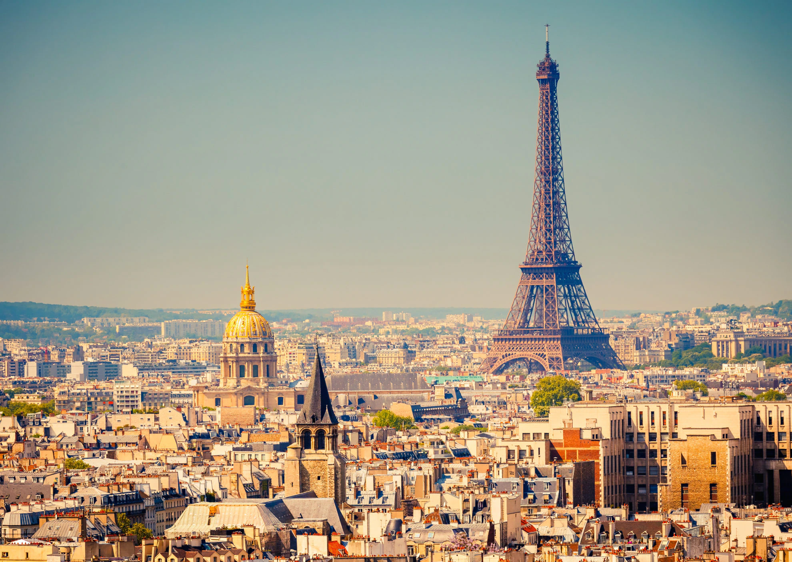

FRANCE TRIP SUMMER 2022 WOOHOO

Itinerary
- May 15th: Fly out of Portland Airport to Paris France
- May 17th: Arrive in Paris -- check into
Hotel R de Paris. This is the cheapest hotel that's in the city and not totally on the outskirts. We will be in Paris for 5 days.
See "Stuff to do in Paris" section for stuff we can do.
- May 23rd: Train to Nice. Check into
Hotel Le Royal. Rooms are cheap compared to the competition, and it's right along the ocean! We will be in Nice until May 27th.
Stuff to do in Paris
We can't do all of this in 5 days. These are just suggestions.
- The Louvre! I have always wanted to go back to the Louvre, especially now that I have an appreciation for art.
- Touristy stuff -- this includes going to the top of the Eiffel Tower, seeing the Arc de Triomphe, Notre Dame, Palais Garnier. This is all doable in a day.
- Walk around Paris
- Visit Versailles
- Cruise along the Seine River
- Pompidou Centre -- largest art museum in Europe -- super cool architechture
- Jardin des Tuileries -- amazing incredible garden
- Cafes -- just find random cafes and eat there
- Luxembourg Garden
- Le Marais -- incredible district of Paris that looks like medieval Paris.
Stuff to do in Nice
- Walk along the Riviera -- there's a defined path for this that people walk all the time. We could even bike it.
- Castle Hill of Nice -- old castle ruins atop a hill with an increidble view
- Food -- the best pizza I've ever had was in Nice
- Parc forestier du Mont-Boron -- more increidble views abd ancient castle ruins
- Musee Massena -- museum with a bunch of ancient Nicean (?) art
- Cathedrale Sainte-Reparate -- beautiful cathedral
- Walk through Old Town -- beautiful district of Nice. Must do.
- Wine Tour -- I've always wanted to do one of these, and the Provence region of France is totally the place to do them.